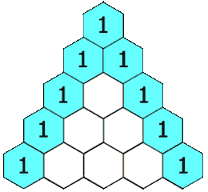

118. 杨辉三角
本题学习状态正在读取学习记录…下次复习：—
按 M 快速切换薄弱标记题目与约束
给定一个非负整数 numRows，生成「杨辉三角」的前 numRows行。
在「杨辉三角」中，每个数是它左上方和右上方的数的和。

示例 1:
输入: numRows = 5
输出: [[1],[1,1],[1,2,1],[1,3,3,1],[1,4,6,4,1]]
示例 2:
输入: numRows = 1
输出: [[1]]
提示:
1 <= numRows <= 30
核心不变量
内部元素来自上一行左上与正上方。
完整推导
思路推导
-
直觉与痛点（形与实的转换）：
杨辉三角在视觉上是一个等腰三角形，但在计算机内存中，我们很难直接建一个等腰三角形。
破局点：把它全部向左对齐，变成一个“直角三角形”（也就是每一行长度不断加一的二维数组/嵌套列表）。
排版后你会发现规律：
[1][1, 1][1, 2, 1][1, 3, 3, 1] -
寻找规律（状态转移方程）：
经过左对齐后，我们可以极其清晰地总结出两条铁律：
-
边界铁律：每一行的第一位（索引
0）和最后一位（索引i），永远是1。 -
内部铁律：对于中间的任何一个数字，它的值等于上一行的同一列与上一行的前一列之和。
转换为极其标准的状态转移方程：
dp[i][j] = dp[i-1][j-1] + dp[i-1][j]
-
-
核心微操（两层循环，步步为营）：
外层循环
i控制行数（从 0 到numRows - 1）。内层循环
j控制每一行里面的元素（从 0 到i）。根据
j是不是首尾位置，分别塞入1或者执行相加公式即可。Java 实现（满分嵌套列表版）
C++ 实现
实现来源：经典解法实现
- 第 r 行有 r+1 个元素，两端为 1
- 中间每个数 = 上一行左右两数之和
- 逐行递推构造
class Solution { public: vector<vector<int>> generate(int numRows) { vector<vector<int>> tri; for (int r = 0; r < numRows; r++) { vector<int> row(r + 1, 1); for (int c = 1; c < r; c++) row[c] = tri[r - 1][c - 1] + tri[r - 1][c]; tri.push_back(row); } return tri; } };Python 实现
实现来源：经典解法实现
- 第 r 行有 r+1 个元素，两端为 1
- 中间每个数 = 上一行左右两数之和
- 逐行递推构造
class Solution: def generate(self, numRows: int) -> List[List[int]]: tri = [] for r in range(numRows): row = [1] * (r + 1) for c in range(1, r): row[c] = tri[r - 1][c - 1] + tri[r - 1][c] tri.append(row) return triGo 实现
实现来源：经典解法实现
- 第 r 行有 r+1 个元素，两端为 1
- 中间每个数 = 上一行左右两数之和
- 逐行递推构造
func generate(numRows int) [][]int { tri := make([][]int, numRows) for r := 0; r < numRows; r++ { tri[r] = make([]int, r+1) for c := 0; c <= r; c++ { if c == 0 || c == r { tri[r][c] = 1 } else { tri[r][c] = tri[r-1][c-1] + tri[r-1][c] } } } return tri }C 实现
实现来源：经典解法实现
- 第 r 行有 r+1 个元素，两端为 1
- 中间每个数 = 上一行左右两数之和
- 逐行递推构造
int** generate(int numRows, int* returnSize, int** returnColumnSizes) { int** tri = malloc(sizeof(int*) * numRows); *returnSize = numRows; *returnColumnSizes = malloc(sizeof(int) * numRows); for (int r = 0; r < numRows; r++) { (*returnColumnSizes)[r] = r + 1; tri[r] = malloc(sizeof(int) * (r + 1)); for (int c = 0; c <= r; c++) tri[r][c] = (c == 0 || c == r) ? 1 : tri[r-1][c-1] + tri[r-1][c]; } return tri; }
import java.util.ArrayList;
import java.util.List;
class Solution {
public List<List<Integer>> generate(int numRows) {
// 创建一个用于存储整个大三角的嵌套列表
List<List<Integer>> triangle = new ArrayList<>();
// 边界防御
if (numRows == 0) {
return triangle;
}
// 外层循环：逐行构建杨辉三角
for (int i = 0; i < numRows; i++) {
// 准备一个新列表，用来装当前这一行的数字
List<Integer> row = new ArrayList<>();
// 内层循环：逐个生成当前行的数字
// 注意：第 i 行有 i + 1 个数字，所以 j <= i
for (int j = 0; j <= i; j++) {
// 边界铁律：每一行的开头和结尾必定是 1
if (j == 0 || j == i) {
row.add(1);
}
// 内部铁律：中间的数字等于上一行的 (j-1) 和 (j) 位置之和
else {
// 🌟 核心状态转移：向上面的行去借数据
// previousRow 就是 triangle.get(i - 1)
List<Integer> previousRow = triangle.get(i - 1);
int leftParent = previousRow.get(j - 1);
int rightParent = previousRow.get(j);
row.add(leftParent + rightParent);
}
}
// 当前行构建完毕，装入大三角中
triangle.add(row);
}
return triangle;
}
}
复杂度
- 时间复杂度：O(numRows2)。我们需要生成 个元素，每个元素的计算时间是 O(1) 的加法，属于完美的等差数列求和。
- 空间复杂度：O(1)（如果不考虑返回值的空间）。如果算上用来存放结果的嵌套列表，空间复杂度为 O(numRows2)。
易错点与扩展（面试的数学连环计）
- 面试追问 1：“如果我不需要整个三角形，我只想要第
rowIndex行，并且【只允许你使用 O(rowIndex) 的额外空间】，该怎么做？”（对应力扣 119 题：杨辉三角 II） - 满分抢答（滚动数组的艺术）：这也是面试最爱考的 DP 空间压缩技巧！ - 因为第i行的计算仅仅依赖于第i-1行，更早的行全都没用了。所以我们只需要一个一维数组。 - 致命细节（倒序遍历）：更新一维数组时，必须从后往前遍历（j从i-1递减到1）。因为如果你从前往后更新，你刚算出来的dp[j]覆盖了旧数据，等会儿算dp[j+1]需要用到旧的dp[j]时，数据已经被污染了！倒序遍历是原地压缩空间的神级手法。 - 面试终极进阶：“你能用纯数学公式，在 O(n) 时间内直接算出第
rowIndex行的每一个数吗？” - 满分优化思路（组合数学公式）：杨辉三角的本质其实是二项式展开的系数，也就是大名鼎鼎的组合数 Cnm！ - 第 n 行的第 m 个数（索引从 0 开始），其值严格等于 Cnm。 - 根据组合数的递推公式：。我们甚至不需要哪怕一次加法，直接用乘除法就能在 O(n) 内顺推生成特定行的所有数字！